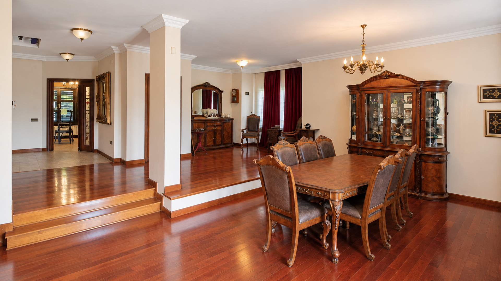

The entrance levelA room for
A room for
everyone.
The main living and dining room extends across approximately 53 m². Large windows bring in daylight, while the balcony looks towards the pool and garden below.
At street level, the entrance hall connects this social floor to the kitchen, staircase, lift and garage.
